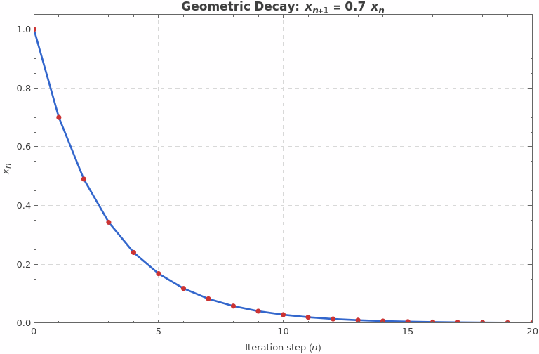
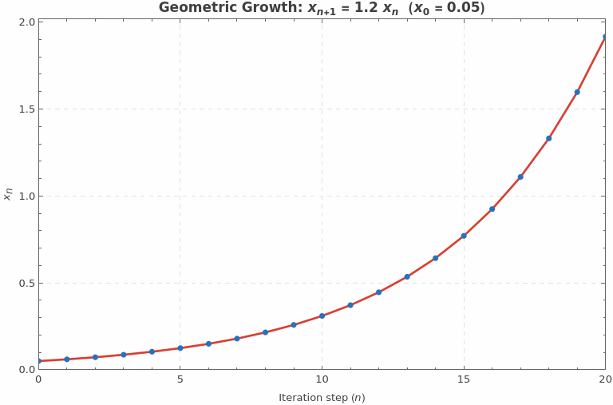
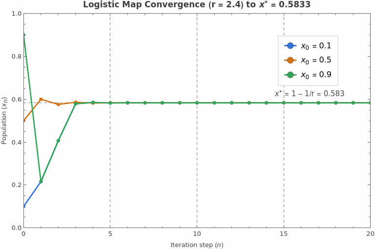
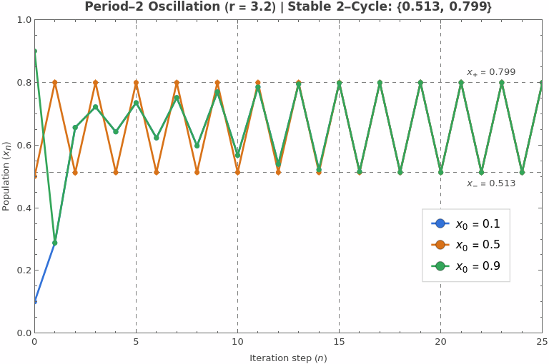
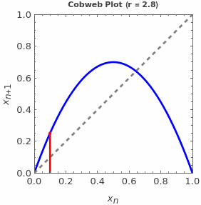
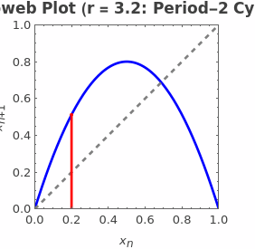
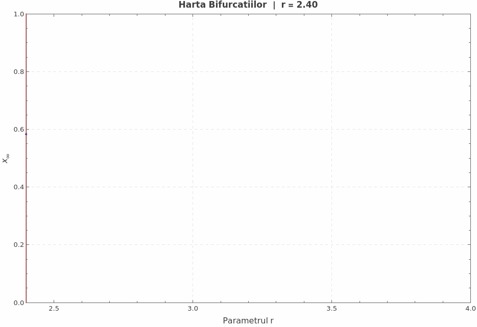
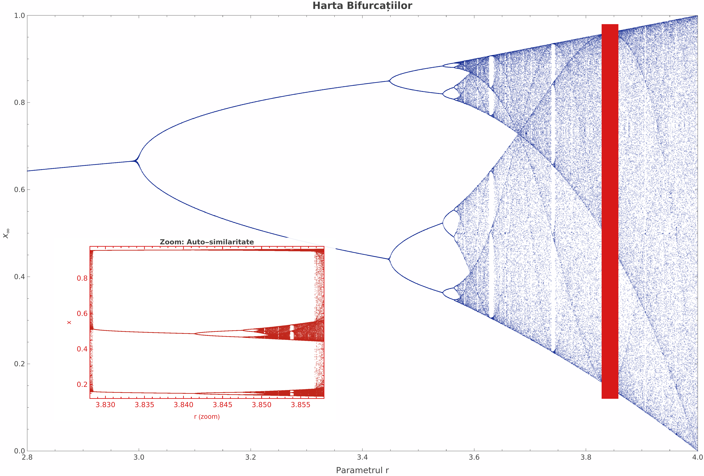

Harta Logistica
Aplicația logistică este un exemplu clasic din matematică și fizică care arată cum o ecuație extrem de simplă poate genera un comportament extrem de complex și imprevizibil, numit HAOS.
- De la ce pleacă totul?
Pornim de la o ecuație simplă de forma: xn+1 = rxn
Unde:
- xn reprezintă starea la un moment dat (de exemplu, populația de animale dintr-un ecosistem într-un anumit an, exprimată ca un procent între 0 și 1).
- r este rată de creștere (sau potențialul biotic).

>
>Pentru a stabiliza populatia introducem o ecuație de forma:
xn+1 = rxn (1 - xn)
- Mesajul simplu al formulei este: populația crește în funcție de numărul actual (xn), dar este frânată când se apropie de resursa maximă (1-xn)

r=2.8" style="width: 40%; height: auto;">>
r = 3.2" style = "width: 40%; height: auto;">>- pentru r < 3 populatia converge la o valoare fixa indiferent de valoarea initiala.
- Pentru r > 3 vedem o oscilatie intre doua valori
- Analiza stabilitatii: rezolvam ecuatia x = f(x), respectiv x=f(f(x)), pentru f(x)=rx(1-x)


2. Istoric scurt
- În anii 1940, matematicianul John von Neumann a sugerat folosirea acestei formule ca generator de numere aleatorii.
- Ulterior, cercetători precum W. Ricker, Paul Stein și Stanislaw Ulam au demonstrat că sistemul are proprietăți mult mai complexe decât un simplu comportament oscilatoriu.
3. Ce se întâmplă când schimbi parametrul


Comportamentul ecuației depinde complet de valoarea lui
- r mic (sub 3): Populația se stabilizează într-o singură valoare fixă (punct fix).
- r=3: Are loc prima bifurcație. Populația nu mai are o singură valoare, ci începe să oscileze permanent între 2 valori (un ciclu de 2 pași).
- Pe măsură ce r crește peste 3: Numărul de stări posibile se dublează rapid (duplicarea perioadei: 2, 4, 8, 16 stări).
- Peste r ≅ 3.57: Sistemul intră în regim haotic. Populația variază aparent la întâmplare, fără un model repetitiv simplu.
 Efectul fluturelui și sensibilitatea la condițiile inițiale
Efectul fluturelui reprezintă sensibilitatea unui sistem haotic la condițiile sale inițiale.
O diferență foarte mică între două stări inițiale poate duce, după un anumit timp, la rezultate complet diferite.
Acest fenomen a fost evidențiat de meteorologul Edward Lorenz și explică de ce unele sisteme, precum atmosfera, sunt dificil de prezis pe termen lung.
În cazul vremii, chiar și mici erori ale măsurătorilor inițiale se pot amplifica în timp, ceea ce face imposibilă
realizarea unor prognoze cu precizie de 100% pentru perioade foarte lungi.
Sursă oficială: American Meteorological Society (Lorenz, E. N., 1963. "Deterministic Nonperiodic Flow", Journal of the Atmospheric Sciences).
Efectul fluturelui și sensibilitatea la condițiile inițiale
Efectul fluturelui reprezintă sensibilitatea unui sistem haotic la condițiile sale inițiale.
O diferență foarte mică între două stări inițiale poate duce, după un anumit timp, la rezultate complet diferite.
Acest fenomen a fost evidențiat de meteorologul Edward Lorenz și explică de ce unele sisteme, precum atmosfera, sunt dificil de prezis pe termen lung.
În cazul vremii, chiar și mici erori ale măsurătorilor inițiale se pot amplifica în timp, ceea ce face imposibilă
realizarea unor prognoze cu precizie de 100% pentru perioade foarte lungi.
Sursă oficială: American Meteorological Society (Lorenz, E. N., 1963. "Deterministic Nonperiodic Flow", Journal of the Atmospheric Sciences).